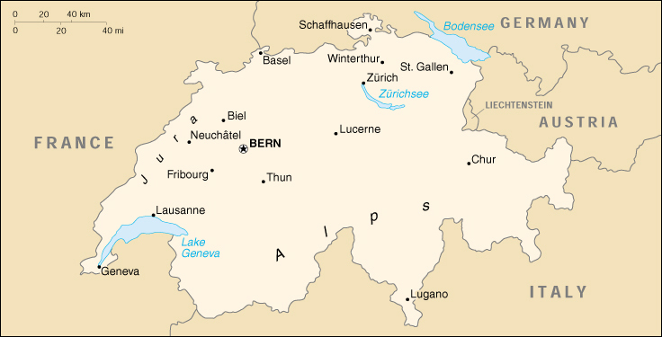

{kind=link}


| Switzerland |
|
|  | |
| Introduction |
Background: Switzerland's independence and neutrality have long been honored by the major European powers and Switzerland was not involved in either of the two World Wars. The political and economic integration of Europe over the past half century, as well as Switzerland's role in many UN and international organizations, may be rendering obsolete the country's concern for neutrality.
| Geography |
Location: Central Europe, east of France, north of Italy
Geographic coordinates: 47 00 N, 8 00 E
Map references: Europe
Area:
total:
41,290 sq km
land:
39,770 sq km
water:
1,520 sq km
Area - comparative: slightly less than twice the size of New Jersey
Land boundaries:
total:
1,852 km
border countries:
Austria 164 km, France 573 km, Italy 740 km, Liechtenstein 41 km, Germany 334 km
Coastline: 0 km (landlocked)
Maritime claims: none (landlocked)
Climate: temperate, but varies with altitude; cold, cloudy, rainy/snowy winters; cool to warm, cloudy, humid summers with occasional showers
Terrain: mostly mountains (Alps in south, Jura in northwest) with a central plateau of rolling hills, plains, and large lakes
Elevation extremes:
lowest point:
Lake Maggiore 195 m
highest point:
Dufourspitze 4,634 m
Natural resources: hydropower potential, timber, salt
Land use:
arable land:
10%
permanent crops:
2%
permanent pastures:
28%
forests and woodland:
32%
other:
28% (1993 est.)
Irrigated land: 250 sq km (1993 est.)
Natural hazards: avalanches, landslides, flash floods
Environment - current issues: air pollution from vehicle emissions and open-air burning; acid rain; water pollution from increased use of agricultural fertilizers; loss of biodiversity
Environment - international agreements:
party to:
Air Pollution, Air Pollution-Nitrogen Oxides, Air Pollution-Sulphur 85, Air Pollution-Sulphur 94, Air Pollution-Volatile Organic Compounds, Antarctic Treaty, Biodiversity, Climate Change, Desertification, Endangered Species, Environmental Modification, Hazardous Wastes, Marine Dumping, Marine Life Conservation, Nuclear Test Ban, Ozone Layer Protection, Ship Pollution, Tropical Timber 83, Tropical Timber 94, Wetlands, Whaling
signed, but not ratified:
Air Pollution-Persistent Organic Pollutants, Antarctic-Environmental Protocol, Climate Change-Kyoto Protocol, Law of the Sea
Geography - note: landlocked; crossroads of northern and southern Europe; along with southeastern France and northern Italy, contains the highest elevations in Europe
| People |
Population: 7,262,372 (July 2000 est.)
Age structure:
0-14 years:
17% (male 637,782; female 605,626)
15-64 years:
68% (male 2,498,540; female 2,421,802)
65 years and over:
15% (male 444,627; female 653,995) (2000 est.)
Population growth rate: 0.3% (2000 est.)
Birth rate: 10.4 births/1,000 population (2000 est.)
Death rate: 8.75 deaths/1,000 population (2000 est.)
Net migration rate: 1.38 migrant(s)/1,000 population (2000 est.)
Sex ratio:
at birth:
1.05 male(s)/female
under 15 years:
1.05 male(s)/female
15-64 years:
1.03 male(s)/female
65 years and over:
0.68 male(s)/female
total population:
0.97 male(s)/female (2000 est.)
Infant mortality rate: 4.53 deaths/1,000 live births (2000 est.)
Life expectancy at birth:
total population:
79.6 years
male:
76.73 years
female:
82.63 years (2000 est.)
Total fertility rate: 1.47 children born/woman (2000 est.)
Nationality:
noun:
Swiss (singular and plural)
adjective:
Swiss
Ethnic groups: German 65%, French 18%, Italian 10%, Romansch 1%, other 6%
Religions: Roman Catholic 46.1%, Protestant 40%, other 5%, none 8.9% (1990)
Languages: German (official) 63.7%, French (official) 19.2%, Italian (official) 7.6%, Romansch 0.6%, other 8.9%
Literacy:
definition:
age 15 and over can read and write
total population:
99% (1980 est.)
male:
NA%
female:
NA%
| Government |
Country name:
conventional long form:
Swiss Confederation
conventional short form:
Switzerland
local long form:
Schweizerische Eidgenossenschaft (German), Confederation Suisse (French), Confederazione Svizzera (Italian)
local short form:
Schweiz (German), Suisse (French), Svizzera (Italian)
Data code: SZ
Government type: federal republic
Capital: Bern
Administrative divisions: 26 cantons (cantons, singular - canton in French; cantoni, singular - cantone in Italian; kantone, singular - kanton in German); Aargau, Ausser-Rhoden, Basel-Landschaft, Basel-Stadt, Bern, Fribourg, Geneve, Glarus, Graubunden, Inner-Rhoden, Jura, Luzern, Neuchatel, Nidwalden, Obwalden, Sankt Gallen, Schaffhausen, Schwyz, Solothurn, Thurgau, Ticino, Uri, Valais, Vaud, Zug, Zurich
Independence: 1 August 1291
National holiday: Anniversary of the Founding of the Swiss Confederation, 1 August (1291)
Constitution: 29 May 1874
Legal system: civil law system influenced by customary law; judicial review of legislative acts, except with respect to federal decrees of general obligatory character; accepts compulsory ICJ jurisdiction, with reservations
Suffrage: 18 years of age; universal
Executive branch:
chief of state:
President Adolf OGI (since 1 January 2000); Vice President Moritz LEUENBERGER (since 1 January 2000); note - the president is both the chief of state and head of government
head of government:
President Adolf OGI (since 1 January 2000); Vice President Moritz LEUENBERGER (since 1 January 2000); note - the president is both the chief of state and head of government
cabinet:
Federal Council or Bundesrat (in German), Conseil Federal (in French), Consiglio Federale (in Italian) elected by the Federal Assembly from among its own members for a four-year term
elections:
president and vice president elected by the Federal Assembly from among the members of the Federal Council for one-year terms that run concurrently; election last held NA December 1999 (next to be held NA December 2000)
election results:
Adolf OGI elected president; percent of Federal Assembly vote - Adolf OGI 71.8%; Moritz LEUENBERGER elected vice president; percent of legislative vote - NA
Legislative branch:
bicameral Federal Assembly or Bundesversammlung (in German), Assemblee Federale (in French), Assemblea Federale (in Italian) consists of the Council of States or Standerat (in German), Conseil des Etats (in French), Consiglio degli Stati (in Italian) (46 seats - members serve four-year terms) and the National Council or Nationalrat (in German), Conseil National (in French), Consiglio Nazionale (in Italian) (200 seats - members are elected by popular vote on a basis of proportional representation to serve four-year terms)
elections:
Council of States - last held in 1999 (each canton determines when the next election will be held); National Council - last held 24 October 1999 (next to be held NA October 2003)
election results:
Council of States - percent of vote by party - NA; seats by party - FDP 12, CVP 11, SVP 6, SPS 4, other 1; note - as of 1 January 2000, 12 seats were up for runoff elections; National Council - percent of vote by party - SPS 22.5%, SVP 22.6%, FDP 19.9%, CVP 15.8%, other small parties all under 5%; seats by party - SPS 51, SVP 44, FDP 43, CVP 35, Greens 9, other small parties 18
Judicial branch: Federal Supreme Court, judges elected for six-year terms by the Federal Assembly
Political parties and leaders: Alliance of Independents' Party (Landesring der Unabhaengigen or LdU, Alliance des Independants or AdI) [Anton SCHALLER, president]; Christian Democratic People's Party (Christichdemokratische Volkspartei der Schweiz or CVP, Parti Democrate-Chretien Suisse or PDC, Partito Democratico-Cristiano Popolare Svizzero or PDC, Partida Cristiandemocratica dalla Svizra or PCD) [Adalbert DURRER, president]; Freedom Party or FPS [Roland BORER]; Green Party (Grune Partei der Schweiz or Grune, Parti Ecologiste Suisse or Les Verts, Partito Ecologista Svizzero or I Verdi, Partida Ecologica Svizra or La Verda) [Hanspetev THUER, president]; Radical Free Democratic Party (Freisinnig-Demokratische Partei der Schweiz or FDP, Parti Radical-Democratique Suisse or PRD, Partitio Liberal-Radicale Svizzero or PLR) [Franz STEINEGGER, president]; Social Democratic Party (Sozialdemokratische Partei der Schweiz or SPS, Parti Socialist Suisse or PSS, Partito Socialista Svizzero or PSS, Partida Socialdemocratica de la Svizra or PSS) [Ursula HAFNER, president]; Swiss People's Party (Schweizerische Volkspartei or SVP, Union Democratique du Centre or UDC, Unione Democratica de Centro or UDC, Uniun Democratica dal Center or UDC) [Christoph BLOCHER, president]; Ticino League (Lega dei Ticinesi) [leader NA]; and other minor parties including Swiss Democratic Party (Schweizer Demokraten or SD, Democrates Suisses or DS, Democratici Svizzeri or DS), Liberal Party (Liberale Partei der Schweiz or LPS, Parti Liberal Suisse or PLS, Partito Liberale Svizzero or PLS), Workers' Party (Parti Suisse du Travail or PST, Partei der Arbeit der Schweiz or PdAdS, Partito Svizzero del Lavoro or PSdL), Evangelical People's Party (Evangelische Volkspartei der Schweiz or EVP, Parti Evangelique Suisse or PEV, Partito Evangelico Svizzero or PEV), and the Union of Federal Democrats (Eidgenossisch-Demokratische Union or EDU, Union Democratique Federale or UDF, Unione Democratica Federale or UDF)
International organization participation: ACCT, AfDB, AsDB, Australia Group, BIS, CCC, CE, CERN, EAPC, EBRD, ECE, EFTA, ESA, FAO, G-10, IADB, IAEA, IBRD, ICAO, ICC, ICFTU, ICRM, IDA, IEA, IFAD, IFC, IFRCS, ILO, IMF, IMO, Inmarsat, Intelsat, Interpol, IOC, IOM, ISO, ITU, LAIA (observer), NAM (guest), NEA, NSG, OAS (observer), OECD, OPCW, OSCE, PCA, PFP, UN (observer), UNCTAD, UNESCO, UNHCR, UNIDO, UNITAR, UNMIBH, UNMIK, UNMOP, UNOMIG, UNTSO, UNU, UPU, WCL, WHO, WIPO, WMO, WToO, WTrO, ZC
Diplomatic representation in the US:
chief of mission:
Ambassador Alfred DEFAGO
chancery:
2900 Cathedral Avenue NW, Washington, DC 20008
telephone:
[1] (202) 745-7900
FAX:
[1] (202) 387-2564
consulate(s) general:
Atlanta, Chicago, Houston, Los Angeles, New York, and San Francisco
consulate(s):
Boston
Diplomatic representation from the US:
chief of mission:
Ambassador J. Richard FREDERICKS
embassy:
Jubilaeumstrasse 93, 3005 Bern
mailing address:
use embassy street address
telephone:
[41] (31) 357 70 11
FAX:
[41] (31) 357 73 44
Flag description: red square with a bold, equilateral white cross in the center that does not extend to the edges of the flag
| Economy |
Economy - overview: Switzerland, a prosperous and stable modern market economy with a per capita GDP 20% above that of the big western European economies, experienced slower growth in 1999, because of weak foreign and domestic demand. Growth, however, is expected to rebound to over 2% in 2000. The Swiss in recent years have brought their economic practices largely into conformity with the EU's to enhance their international competitiveness. Although the Swiss are not pursuing EU membership in the near term, in 1999 Bern and Brussels signed agreements to further liberalize trade ties. These agreements still have to pass a Swiss referendum in spring 2000, however. Switzerland is still considered a safe haven for investors, because it has maintained a degree of bank secrecy and has kept up the franc's long-term external value.
GDP: purchasing power parity - $197 billion (1999 est.)
GDP - real growth rate: 1.4% (1999 est.)
GDP - per capita: purchasing power parity - $27,100 (1999 est.)
GDP - composition by sector:
agriculture:
2.8%
industry:
31.1%
services:
66.1% (1995)
Population below poverty line: NA%
Household income or consumption by percentage share:
lowest 10%:
2.9%
highest 10%:
28.6% (1982)
Inflation rate (consumer prices): 1% (1999 est.)
Labor force: 3.8 million (956,000 foreign workers, mostly Italian) (1996 est.)
Labor force - by occupation: services 67%, industry 28%, agriculture and forestry 5% (1996 est.)
Unemployment rate: 2.8% (1999 est.)
Budget:
revenues:
$32.66 billion
expenditures:
$34.89 billion, including capital expenditures of $2.3 billion (1998 est.)
Industries: machinery, chemicals, watches, textiles, precision instruments
Industrial production growth rate: 3.3% (1999 est.)
Electricity - production: 61.076 billion kWh (1998)
Electricity - production by source:
fossil fuel:
3.74%
hydro:
54.29%
nuclear:
40.18%
other:
1.79% (1998)
Electricity - consumption: 50.8 billion kWh (1998)
Electricity - exports: 29.6 billion kWh (1998)
Electricity - imports: 23.6 billion kWh (1998)
Agriculture - products: grains, fruits, vegetables; meat, eggs
Exports: $98.5 billion (f.o.b., 1999)
Exports - commodities: machinery, chemicals, metals, watches, agricultural products
Exports - partners: EU 62% (Germany 24%, France 10%, Italy 8%, UK 6%, Austria 3%), US 10%, Japan 4% (1998)
Imports: $99 billion (f.o.b., 1999)
Imports - commodities: machinery, chemicals, vehicles, metals; agricultural products, textiles
Imports - partners: EU 80% (Germany 33%, France 12%, Italy 10%, Netherlands 5%, UK 5%), US 6%, Japan 3% (1998)
Debt - external: $NA
Economic aid - donor: ODA, $1.1 billion (1995)
Currency: 1 Swiss franc, franken, or franco (SFR) = 100 centimes, rappen, or centesimi
Exchange rates: Swiss francs, franken, or franchi (SFR) per US$1 - 1.5878 (January 2000), 1.5022 (1999), 1.4498 (1998), 1.4513 (1997), 1.2360 (1996), 1.1825 (1995)
Fiscal year: calendar year
| Communications |
Telephones - main lines in use: 4.82 million (1998)
Telephones - mobile cellular: 810,170 (1999)
Telephone system:
excellent domestic and international services
domestic:
extensive cable and microwave radio relay networks
international:
satellite earth stations - 2 Intelsat (Atlantic Ocean and Indian Ocean)
Radio broadcast stations: AM 4, FM 113 (plus many low power stations), shortwave 2 (1998)
Radios: 7.1 million (1997)
Television broadcast stations: 108 (1997)
Televisions: 3.31 million (1997)
Internet Service Providers (ISPs): 115 (Switzerland and Liechtenstein) (1999)
| Transportation |
Railways:
total:
4,492 km (1,564 km double track)
standard gauge:
3,317 km 1.435-m gauge (3,288 km electrified)
narrow gauge:
1,165 km 1.000-m gauge (1,165 km electrified); 10 km 0.800-m gauge (1998)
Highways:
total:
71,059 km (including 1,638 km of expressways) (1998 est.)
paved:
NA km
unpaved:
NA km
Waterways: 65 km; Rhine (Basel to Rheinfelden, Schaffhausen to Bodensee); 12 navigable lakes
Pipelines: crude oil 314 km; natural gas 1,506 km
Ports and harbors: Basel
Merchant marine:
total:
23 ships (1,000 GRT or over) totaling 429,998 GRT/771,227 DWT
ships by type:
bulk 12, cargo 5, chemical tanker 5, petroleum tanker 1 (1999 est.)
Airports: 67 (1999 est.)
Airports - with paved runways:
total:
42
over 3,047 m:
3
2,438 to 3,047 m:
4
1,524 to 2,437 m:
13
914 to 1,523 m:
7
under 914 m:
15 (1999 est.)
Airports - with unpaved runways:
total:
25
under 914 m:
25 (1999 est.)
| Military |
Military branches: Army, Air Force, Frontier Guards, Fortification Guards
Military manpower - military age: 20 years of age
Military manpower - availability:
males age 15-49:
1,855,808 (2000 est.)
Military manpower - fit for military service:
males age 15-49:
1,579,921 (2000 est.)
Military manpower - reaching military age annually:
males:
42,169 (2000 est.)
Military expenditures - dollar figure: $3.1 billion (FY98)
Military expenditures - percent of GDP: 1.2% (FY98)
| Transnational Issues |
Disputes - international: none
Illicit drugs: because of more stringent government regulations, used significantly less as a money-laundering center; transit country for and consumer of South American cocaine and Southwest Asian heroin